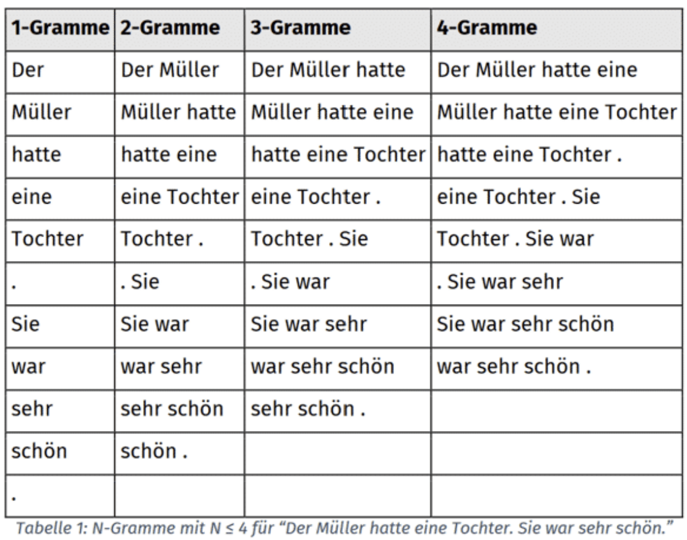
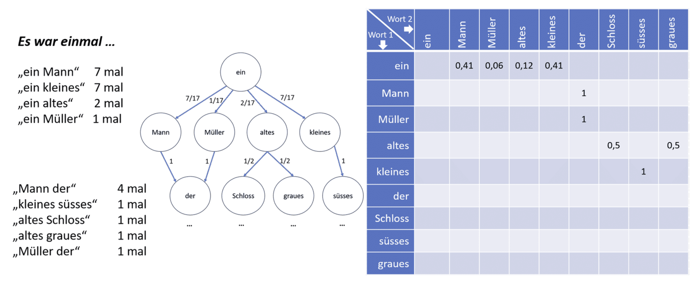
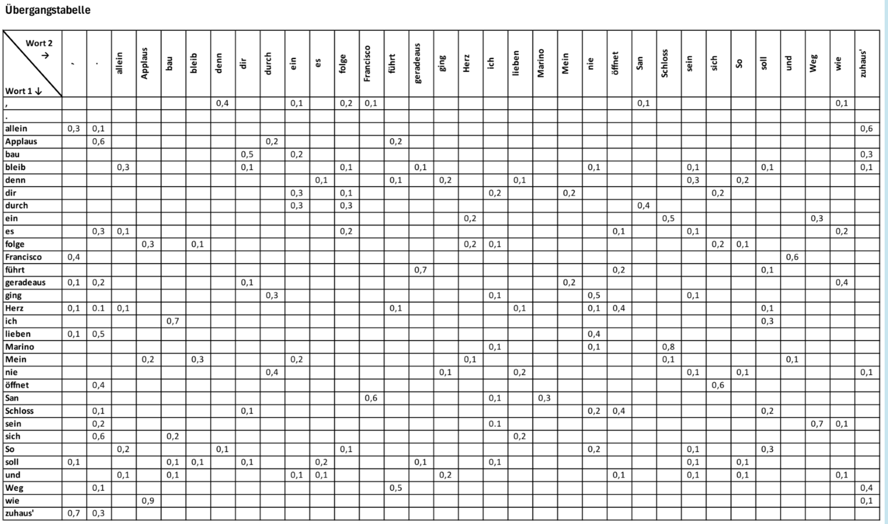
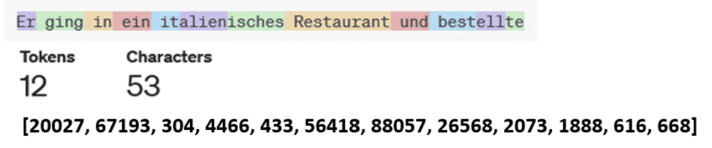
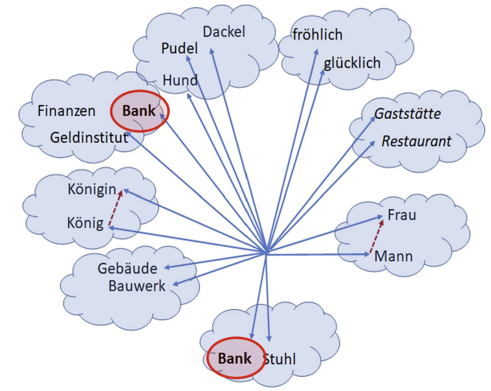
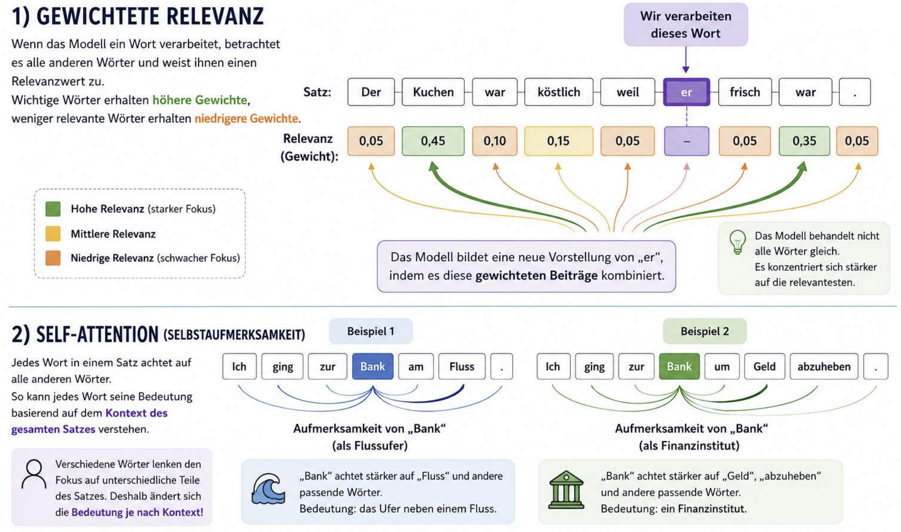
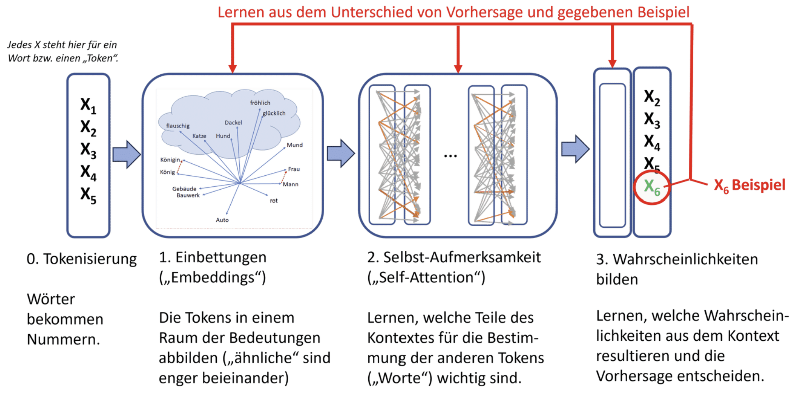

„Er ging in ein italienisches Restaurant und bestellte eine …“ Du kannst plausible Fortsetzungen vermuten, ohne den vollständigen Satz zu kennen. Sprachmodelle berechnen solche Fortsetzungen aus gelernten Mustern. Du untersuchst, wie daraus Texte entstehen und warum überzeugende Antworten trotzdem falsch sein können.
Teil 3: Lernalgorithmen · Teil 2: Maschinelles Lernen · Teil 1: KI-Grundlagen
Ein Sprachmodell beschreibt Wahrscheinlichkeiten für sprachliche Folgen. Ein autoregressives Sprachmodell berechnet aus einem gegebenen Kontext eine Verteilung über das nächste Token. Ein Token kann ein Wort, ein Wortteil, ein Satzzeichen oder eine andere Texteinheit sein. Durch wiederholtes Vorhersagen und Anhängen entsteht ein längerer Text.
Kontext → Wahrscheinlichkeiten → Token auswählen → Token anhängen → mit dem erweiterten Kontext wiederholen
Regelbasierte Sprachverarbeitung versucht, Grammatik und Beziehungen ausdrücklich zu beschreiben. Ein einfacher datenbasierter Ansatz zählt dagegen wiederkehrende Folgen in einem Korpus, einer Sammlung von Texten. Ein N-Gramm umfasst N aufeinanderfolgende Einheiten. Ein Bigramm enthält zwei, ein Trigramm drei Einheiten.


P(Folgewort | Präfix) = Häufigkeit(Präfix, Folgewort) / Summe der Häufigkeiten aller Nachfolger des Präfixes
Das angehängte Arbeitsblatt verwendet fünf Sätze. <s> markiert den Anfang, </s> das Ende. Groß- und Kleinschreibung wird in diesem Korpus vereinheitlicht. Du zählst nur Übergänge innerhalb jedes Satzes, nicht vom Ende eines Satzes zum nächsten Anfang.
a) <s> löwenherz verließ sein schloss </s> b) <s> löwenherz schloss die tür </s> c) <s> löwenherz drehte den schlüssel im schloss </s> d) <s> sein schloss ist schön </s> e) <s> er verließ den garten </s>
Wähle jeweils den häufigsten Nachfolger des zuletzt erzeugten Wortes. Bei einem Gleichstand gilt zuerst: das alphabetisch erste Wort. <s> und </s> folgen nach regulären Wörtern. Stoppe bei </s>. Nutze anschließend die Variante „alphabetisch letztes Wort“.
Jetzt nutzt du das bereitgestellte Bild uebergangstabelle. Die Zeile ist das aktuelle Wort, die Spalte ein möglicher Nachfolger. Ein leerer Eintrag bedeutet hier 0. Ein Punkt beendet die Generierung. Für den Satzanfang wird „Ich“ wie die Zeile „ich“ behandelt; „Du“ bleibt unbekannt.

| Aktuelles Wort | Nachfolger: Wert |
|---|
SoekiaGPT: Ein didaktisches Sprachmodell bietet einen passenden Vergleichsversuch. Der Name bedeutet nicht, dass ein N-Gramm-Modell technisch ein neuronaler GPT-Transformer ist. Kurze Kontexte verlieren leicht den roten Faden; sehr lange Folgen werden selten und können einzelne Originalpassagen reproduzieren. Backoff und Glättung helfen gegen Datenlücken, lösen aber nicht alle Kontextprobleme.
Digitale Rechner verarbeiten auch Text über numerische Kodierungen. ASCII deckt nur einen begrenzten Zeichenvorrat ab; heutige Texte benötigen in der Regel Unicode-Kodierungen. Die Tokenisierung eines Sprachmodells ist ein weiterer Verarbeitungsschritt: Sie zerlegt Text in Einheiten und ordnet ihnen Token-IDs aus einem Vokabular zu.

Viele Tokenizer verwenden häufige Teilwortfolgen, nicht nur vollständige Wörter oder einzelne Buchstaben. Seltene Wörter können auf mehrere Tokens verteilt werden. Auch Leerzeichen, Satzzeichen und Großschreibung beeinflussen die Zerlegung. Wortteile müssen keine sprachlich sinnvollen Silben sein.
Nutze den OpenAI-Tokenizer für Rindfleischetikettierung und Rechtsschutzversicherung. Halte den gewählten Tokenizer beziehungsweise die angebotene Modellgruppe fest. Vergleiche danach dieselben Wörter mit einem vorangestellten Leerzeichen. Die Aufgabe hat deshalb keine tokenizerunabhängige feste Tokenzahl.
Ein Embedding stellt eine Einheit als Vektor dar, also als Liste numerischer Werte. Gelernte Repräsentationen können Gemeinsamkeiten erfassen, die an der Schreibweise nicht sichtbar sind: „Auto“ und „PKW“ passen oft in ähnliche Kontexte, „Hund“ und „Mund“ trotz ähnlicher Buchstaben eher nicht.

Synonyme sind unterschiedliche Wörter mit ähnlicher Bedeutung, etwa „Auto“ und „PKW“. Bei Mehrdeutigkeit ist es umgekehrt: Dieselbe Wortform kann unterschiedliche Dinge bezeichnen. Welche Bedeutung passt, erkennst du oft erst an den umgebenden Wörtern, also am Kontext.
„Ich sitze auf der Bank.“
„Für einen Kredit gehe ich zur Bank.“
Ein klassisches word2vec-Modell lernt aus vielen Textbeispielen einen gespeicherten Vektor für jedes Wort. Nach dem Training liefert das Nachschlagen von „Bank“ jedes Mal dieselbe Zahlenliste, unabhängig vom aktuellen Satz. Weil das Wort beim Training in verschiedenen Zusammenhängen vorkam, können sich darin unterschiedliche Verwendungen überlagern. Das Modell legt aber nicht automatisch einen eigenen Vektor pro Bedeutung an.
Die Grenze: Der feste Wortvektor allein verrät nicht, welche Lesart in einem neuen Satz gemeint ist. Dafür müsste ein zusätzliches Verfahren den Satzkontext berücksichtigen. „Fest“ bedeutet also nicht, dass das Wort nur eine Bedeutung hat, sondern dass seine gespeicherte Darstellung beim Nachschlagen gleich bleibt.
Am Anfang wird eine Token-ID ebenfalls auf einen gespeicherten Embedding-Vektor abgebildet. Wird „Bank“ in beiden Beispielen durch dieselbe Token-ID dargestellt, ist dieses Start-Embedding gleich. Die ID bezeichnet zunächst die Texteinheit, nicht schon eindeutig ihre Bedeutung.
Bei der Verarbeitung kommen Positionsinformationen und Beiträge anderer zugänglicher Tokens hinzu. Durch Attention und weitere Rechenschritte kann die Repräsentation von „Bank“ je nach Satz unterschiedliche Informationen aufnehmen. Das Ergebnis nach diesen Schichten ist deshalb kontextabhängig. Dabei werden die Modellgewichte nicht für jeden Satz neu trainiert: Mit denselben gelernten Gewichten wird aus unterschiedlichen Eingaben ein unterschiedliches Ergebnis berechnet.
Vektoren lassen sich addieren und subtrahieren. Eine klassische Anschauungsrelation lautet König − Mann + Frau ≈ Königin. Das Ergebnis wird als naher Vektor gesucht, nicht als exakte sprachliche Gleichung bewiesen. Solche Beziehungen hängen von Modell, Trainingsdaten und Ähnlichkeitsmaß ab.
Diese Beziehungen sind ein Denkexperiment, keine gemessenen Ergebnisse eines bestimmten Embedding-Modells. Die Speisen-Zuordnung ist eine vereinfachte kulturelle Assoziation, und nicht jede Analogie hat genau eine Lösung. Gelernte Berufsassoziationen können außerdem gesellschaftliche Stereotype widerspiegeln statt einer entsprechenden Berufsbezeichnung. Solche Muster sind keine allgemeinen Rechengesetze.
Diese beiden Sätze enthalten dieselben Wörter. Vergleiche die Position von „nur“:
Typischerweise begrenzt „nur“ im ersten Satz die erledigte Tätigkeit, im zweiten die beteiligte Person. Betonung und weiterer Kontext können die Lesart zusätzlich verändern.
Ein Transformer benötigt daher Positionsinformation. Im ursprünglichen Transformer werden Positionsvektoren zu Embeddings addiert. Andere Architekturen verwenden beispielsweise relative Positionen oder Rotationen. Entscheidend ist die Funktion: Die Anordnung der Tokens soll bei der Verarbeitung berücksichtigt werden.
Diese drei Sätze verwenden dasselbe Wort in unterschiedlichen Zusammenhängen:
Self-Attention berechnet Beziehungen zwischen Repräsentationen von Tokens. Für eine betrachtete Position entstehen Gewichte, mit denen die Value-Vektoren anderer zugänglicher Positionen kombiniert werden. Die Gewichte kommen aus trainierten Projektionen, nicht aus einer ausdrücklich programmierten Liste „wichtiger Wörter“. Mehrere Attention-Köpfe und Schichten können unterschiedliche Beziehungen erfassen.

Für einen übersichtlichen Rechenversuch nehmen wir zwei bereits transformierte Value-Vektoren: A = (2; 0), B = (0; 4), mit normierten Gewichten 0,6 und 0,4. Diese Zahlen sind fiktiv und keine Messung eines echten Sprachmodells.
GPT steht für Generative Pre-trained Transformer. Ein autoregressiver GPT verarbeitet Tokens mit Positionsinformationen durch wiederholte Transformer-Blöcke. Darin wirken Attention und Feed-forward-Netze, häufig als Multilayer-Perzeptron (MLP), zusammen. Residualverbindungen und Normalisierungen gehören ebenfalls zur Architektur.

Nach den Transformer-Blöcken bildet eine Ausgabeprojektion die letzte Repräsentation auf einen Wert pro möglichem Token ab: die Logits. Softmax macht daraus eine Verteilung. Ein Auswahlverfahren bestimmt das nächste Token, das dann zum Kontext hinzukommt.
Die Modellgewichte wurden beim Training gelernt. Temperatur, Top-K und Top-P verändern dagegen die Auswahl in der Anwendung; sie trainieren das Modell nicht neu. Unterstützte Parameter und ihre Reihenfolge können je nach System variieren.
| Begriff | Wirkung |
|---|---|
| Temperatur T | Skaliert Logits vor Softmax. Niedrige Werte bündeln, hohe verteilen die Wahrscheinlichkeit stärker. T = 0 wird als gesonderte Greedy-Auswahl behandelt. |
| Top-K | Erlaubt nur die k wahrscheinlichsten Kandidaten. |
| Top-P | Erlaubt die kleinste Spitze der sortierten Verteilung, deren Summe mindestens p erreicht. Danach wird neu normiert. |
| Max Tokens | Obergrenze für die Ausgabe; kein Auftrag, diese Grenze immer auszuschöpfen. |
| Kontextfenster | Begrenzt den zugleich verarbeitbaren Kontext; Eingabe und erzeugte Ausgabe müssen in das Budget passen. |
| Parameteranzahl | Anzahl gelernter Modellwerte; keine gewöhnliche Einstellung pro Anfrage und keine alleinige Qualitätsgarantie. |
Für T > 0: P(i) = exp(zᵢ / T) / Σⱼ exp(zⱼ / T)
Softmax sorgt für eine Summe von 1. Höhere Temperatur bedeutet mehr Zufall, nicht automatisch bessere Kreativität oder mehr Wahrheit. Bei Top-P kann das letzte aufgenommene Token die Summe über p heben. Die Formulierung „kumulierte Wahrscheinlichkeit höchstens p“ aus dem angehängten Bild ist deshalb irreführend.
| Token | Logit | Vor Filter | Nach Filter | Gezogen |
|---|
Ein zu niedriges Ausgabelimit kann einen Satz abschneiden. Ein großes Kontextfenster lässt mehr Eingabe zu, garantiert aber nicht, dass jede Information zuverlässig genutzt wird. Systeme können alte Inhalte kürzen, zusammenfassen oder erneut abrufen. Kontext ist deshalb kein unbegrenztes dauerhaftes Gedächtnis.
Ein Basismodell entsteht durch Pre-Training, etwa aus der Vorhersage fehlender nächster Tokens in großen Textsammlungen. Die Ziel-Tokens stammen aus den Texten selbst: Das ist selbstüberwachtes Lernen. Ein Basismodell kann bereits Texte fortsetzen und weitere Fähigkeiten zeigen; „es kann überhaupt nicht sprechen oder nur eine Geschichte ergänzen“ wäre zu eng.
Beim Supervised Fine-Tuning werden Modellgewichte mit ausgewählten Beispielen gewünschter Antworten angepasst. Präferenztraining kann zusätzlich Antworten nach menschlichen oder anderen Qualitätsbewertungen verbessern, beispielsweise mit RLHF oder anderen Verfahren. Der konkrete Trainingsprozess ist nicht bei jedem Assistenten identisch.
Ein Unterrichtsbeispiel für gutes Antwortverhalten könnte lauten:
Anfrage: Wann findet der nächste Elternabend statt? Gewünschte Antwort: Mir liegt kein bestätigter Termin vor. Bitte nutze die aktuelle Mitteilung der Schule oder frage im Sekretariat nach. Anfrage: Fasse diese Mitteilung in zwei Sätzen zusammen: [Text] Gewünschte Antwort: [Sachliche Zusammenfassung ausschließlich aus dem Text]
Das Beispiel trainiert eine Aufgabe beziehungsweise ein Verhalten, ohne einen erfundenen Termin oder eine allgemeingültige Attestregel als Fakt zu speichern. Aktuelle Termine gehören besser in eine verlässliche abrufbare Informationsquelle. Namen, Krankheitsdaten und andere vertrauliche Informationen sind für solche Übungsdaten nicht erforderlich.
Eine Systemanweisung kann Rolle, Stil und Regeln der Antworten vorgeben. Das ist Kontext in der Anwendung und verändert für sich genommen keine Modellgewichte. Eine Anweisung wie „Nutze nur belegte Angaben“ hilft, garantiert aber keine fehlerfreie Befolgung.
Bei Retrieval-Augmented Generation (RAG) sucht ein System passende Inhalte in Dokumenten, Datenbanken oder anderen Quellen und gibt sie als zusätzlichen Kontext an das Modell. Quellen können veraltet, unpassend oder manipuliert sein; auch ihre Verarbeitung kann fehlerhaft sein. RAG ersetzt deshalb keine Quellenprüfung. Ob ein bestimmter Schulchatbot tatsächlich so arbeitet, lässt sich ohne seine technische Dokumentation nicht feststellen.
Angaben wie 4B oder 32B bezeichnen ungefähr vier beziehungsweise 32 Milliarden gelernte Parameter. Mehr Parameter bedeuten nicht automatisch ein besseres Assistenzsystem: Trainingsdaten, Architektur, Nachtraining, Aufgabe und Auswertung zählen ebenfalls. Hardwarebedarf hängt zusätzlich von Zahlenformat, Quantisierung und Kontextlänge ab.
Ein Sprachmodell berechnet gelernte Muster, nicht automatisch geprüfte Tatsachen. Auch mit Nachtraining und Werkzeugen bleiben Fehler möglich. Die technischen Ursachen sind differenzierter als „es rät nur“: Modelle können komplexe Aufgaben lösen, aber ihre zuverlässigen Grenzen müssen für den konkreten Einsatz geprüft werden.
Formuliere zuerst zu jedem Phänomen eine eigene Erklärung und einen sinnvollen Gegencheck. Öffne dann die passende Auflösung.
Die Architektur und Rechenoperationen sind beschreibbar. Welche gelernten inneren Merkmale eine konkrete Antwort verursachen, ist oft schwer vollständig nachzuvollziehen. Die Trainingsdaten liegen im fertigen Modell nicht als durchsuchbare Originalsammlung vor, können aber teilweise memoriert sein. Modelle enthalten nicht nachweislich „praktisch alle Bücher“ oder das gesamte Internet.
Training und Anwendung benötigen Rechenleistung und Energie; der Aufwand hängt von Modell, Hardware, Kontext und Nutzung ab. Gewichte können gegenüber dem Textkorpus kompakt sein, sind aber keine vollständig rückholbare Archivkopie. Kleinere oder quantisierte Modelle können lokal nutzbar sein. Qualitäts-, Speicher- und Energiefragen müssen getrennt untersucht werden.
Primäre Grundlage sind dein bereitgestelltes Material, die sieben neuen Bilder und die angehängten Aufgaben. Die Korpus-Sätze sowie die Übergangsregeln sind übernommen; der Name wurde zu Löwenherz geändert. Erklärende Einschränkungen, überprüfbare Lösungen und der Sampling-Versuch ergänzen das Material. Die Bilder bleiben unverändert, ihre Vereinfachungen werden im Text geprüft.
Die Korpus-Aufgabe nennt im angehängten Arbeitsblatt „kontaktstudium informatik / koin“. Die Bild- und Aufgabenherkunft wird so angegeben, wie sie im bereitgestellten Material sichtbar ist. Die Logits und Ziehungen im Auswahllabor sind ein fiktives Rechenmodell, keine Ausgabe eines echten LLMs.